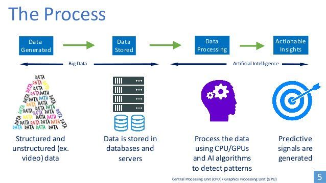

Artificial intelligence uses machine learning to mimic human intelligence. The computer has to learn how to respond to certain actions, so it uses algorithms and historical data to create something called a propensity model. Propensity models will then start making predictions (like scoring leads or something). AI can do much more than this, but those are common uses and functionality for marketing. And while it might seem like the machines are ready to rise up and take over, humans are still needed to do much of the work. Mainly, we use AI to save us time — adding people to email automation and allowing AI to do much of the work while we work on other tasks.
